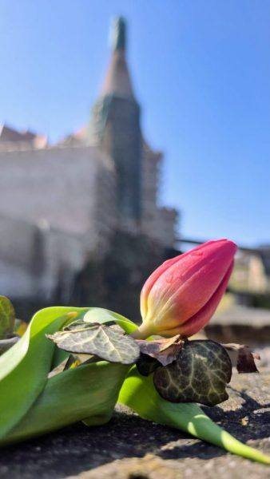
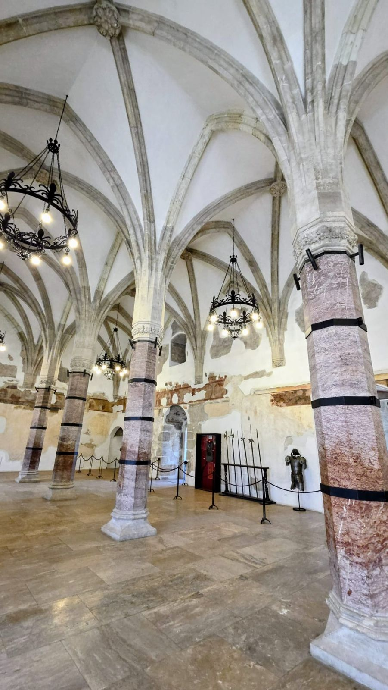
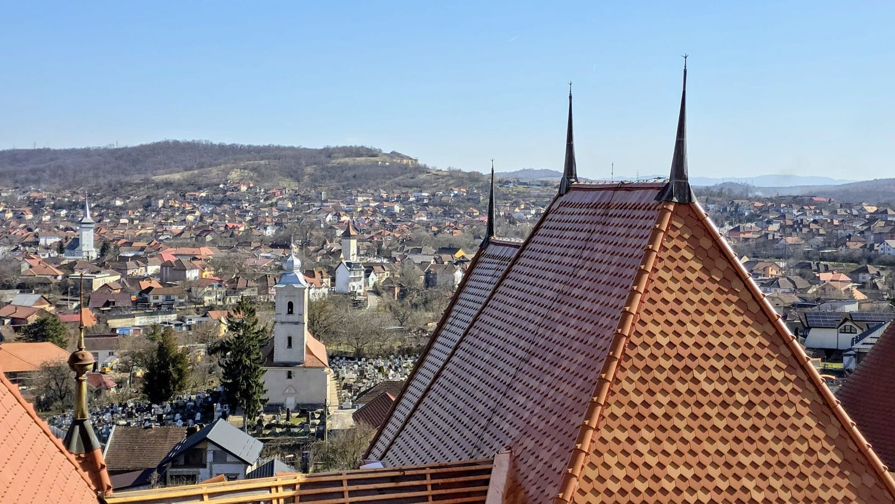
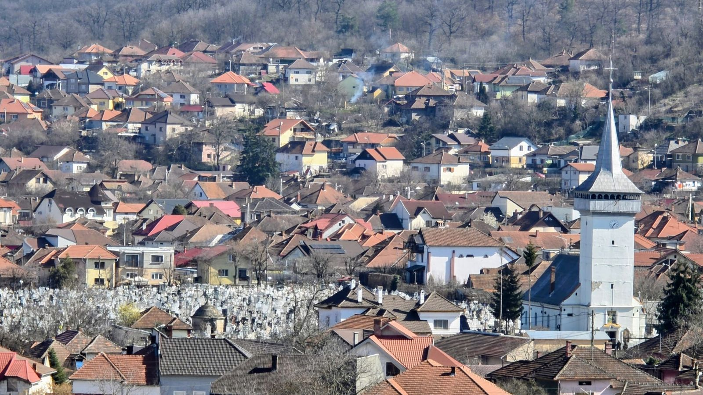
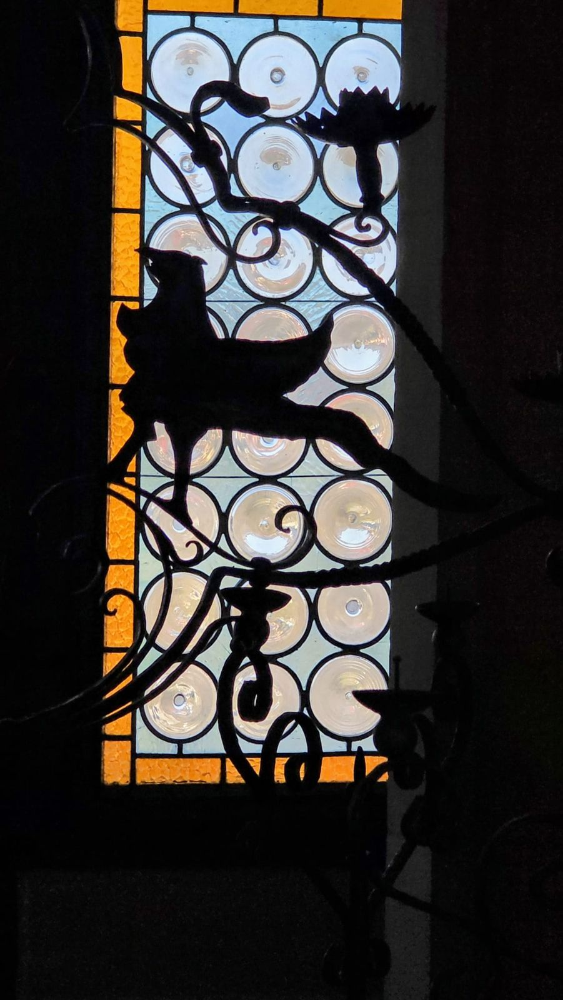

Journey 02 · Hunedoara Note 6 of 12 Chronicles of
Chronicles of Romania: Vlad III of Wallachia
Vlad III of Wallachia: Monster, Myth, Man

Standing in this part of the world, the name Dracula shows up almost immediately.
Castles, souvenirs, tour guides, movie references. For many Americans, Vlad III of Wallachia arrives already wrapped in a gothic fog: a vampire prince somewhere in Transylvania.
But somewhere behind that fog there was a real person.
A 15th-century ruler trying to hold together a small frontier principality squeezed between too many expanding empires.
The question isn’t whether Vlad was violent.
He was.
The more interesting question is why that violence has been remembered so differently.
In Western pop culture, he becomes a monstrous sadist. In Romania, Vlad sometimes appears as a harsh defender of a fragile state. In the historical record, he looks more like one of many brutal rulers trying to survive a brutal century.
Which leaves me to walk through the historic streets of just one of many towns he was connected to, wondering whether Vlad Draculia was the monster, the myth or the man?
The Monster
In 1462, the army of Sultan Mehmed II marched toward the Wallachian capital of Târgoviște. They had traveled for weeks, constantly harried by Vlad’s forces, who despite being vastly outnumbered, attacked under the cover of night and retreated, leaving scorched earth behind them.
By the time the forest began to give way to the fields surrounding the city, the army was ready for battle and ready, no doubt, for rest. They were not ready for what they found waiting outside the city.
The trees surrounding the city gave way to stakes. Not tens, or even hundreds of them, but what seemed like thousands. More than could be counted without going mad. On each hung the body of an impaled person. Men, women, children – a gruesome forest of corpses stretched across the fields outside the city gates. (1)
The message was unmistakable. This land would not surrender quietly.
The man responsible for that message was Vlad III of Wallachia, also known as Vlad Drăculea, Vlad Țepeș, and most memorably today – Vlad the Impaler.
The scene described here is so shocking that it has echoed through centuries of retelling, likely embellished in both the retelling and the German pamphlets that were printed to share the shockingly lurid accounts of Vlad’s activities and punishments. The stories painted him as something close to a medieval villain, a useful ruination of his reputation as a shrewd and courageous military leader to justify his imprisonment by Matthias Corvinus.

From this story, and many like it, the image of Vlad as a monster took root.
The Myth
Beside the fountain in town was a golden cup. It gleamed in the sunlight, its shining surface an invitation to one and all. All day, merchants, farmers, peasants, and travelers alike would come to the fountain and drink from the golden cup, always returning it to its rightful place.
No guards monitored either cup or fountain. Anyone could take the cup and dip it into the fountain for a drink, and they did time and time again.
But no one dared to steal the golden cup.
In the lands of Vlad III Dracul, Voivode of Wallachia, no one dared to steal anything at all. (2)

Whether the cup actually existed is almost beside the point. The story survived because it explained something people believed about Vlad’s rule. Under Vlad, crime carried consequences severe enough to make even gold safe in public.
The fear of his punishments created order, but the definition of who deserved those punishments was often wide and deeply personal. In different stories, his justice falls on corrupt nobles, thieves, rivals, the idle, the poor, the sick, the unfaithful, and of course the Ottomans. Vlad’s sense of wrongdoing was not always consistent, but it was always absolute.
In these stories, Vlad is not a monster but a harsh judge. He was a ruler who imposed stability and order in a country long troubled by corruption, rival nobles, and constant political intrigue. He protected and defended the region and the common person against encroaching empires for years, and his violence was necessary to prevent despotism of the noble class. He is both villain and folk hero, the great anti-hero who protected Romanian independence. (3)
The same reputation that horrified outsiders became, locally, proof of justice and protection.
The Man
Strip away the legends and the world in which Vlad existed comes into focus.
Wallachia in the 1400s sat between powerful neighbors. The Ottoman Empire pushed north from the Balkans. The Kingdom of Hungary exerted influence from the west. Inside the country, rival nobles could overthrow rulers almost as quickly as they crowned them.

Vlad’s own life followed that pattern of instability. As a boy, Vlad spent years as a hostage of the Ottoman Empire. After his father’s murder, he claimed the Wallachian throne, only to lose it quickly and flee into exile. Less than a decade later he returned and reclaimed power, purged the noble ranks, and began the harsh rule for which he is remembered. Six years later he was dethroned again by his brother and imprisoned, possibly on false charges, by the Hungarian king Matthias Corvinus for thirteen years. After his release, he reclaimed the throne for a third and final time before dying only a few years later. (4)
His was not a smooth rise to power or a stable reign. It was a career defined by reversals and set backs, and he was a man surrounded by others just as ruthless in their own ways to claim and maintain power and order.
In history, Vlad is less a gothic villain and perhaps more a ruler trying to survive in a brutally unstable political landscape.
Violent Men in Violent Times
As much as we try to tell ourselves otherwise, history rarely gives us either saints or monsters.
Vlad lived in a time of immense instability, when the lands around Wallachia were being squeezed by larger powers and reshaped by the expansion of the Ottoman Empire, the ambitions of Hungary, and the constant fragility of rule within the region itself.
None of this makes Vlad, or his tactics less brutal. But it does place him into the context of the world that produced him. His was a world where power was unstable, alliances were thin, and survival sometimes depended on convincing enemies that invading your land would be far worse than just leaving it alone. He was far from the only brutal figure from the era, but an intriguing name, chance and history have made him into a phenomenon.

What fascinates me about Vlad is not just the man himself, but what happened to him afterward. A single historical life became a series of stories, each shaped by the needs of the people telling it.
In some versions he becomes a monster, in others a defender, in still others a gothic vampire prince. The same events generate different meanings depending on who remembers them.
Standing in this region, where castles, legends, and chronicles sit side by side, it becomes clear that history is never just about what happened.
It’s about how people choose to remember it.
(1) Treptow, Kurt W. (2000). Vlad III Dracula: The Life and Times of the Historical Dracula. The Center of Romanian Studies. ISBN 978-973-98392-2-8.
(2) Balotă, Anton (1991). “An analysis of the Dracula tales”. In Treptow, Kurt W. (ed.). Dracula: Essays on the Life and Times of Vlad Țepeș. East European Monographs, Distributed by Columbia University Press. pp. 153–184. ISBN 978-0-88033-220-0.
(3) McNally, Raymond T. (1991). “Vlad Țepeș in Romanian folklore”. In Treptow, Kurt W. (ed.). Dracula: Essays on the Life and Times of Vlad Țepeș. East European Monographs, Distributed by Columbia University Press. pp. 197–228. ISBN 978-0-88033-220-0.
(4) Cazacu, Matei (2017). Reinert, Stephen W. (ed.). Dracula. East Central and Eastern Europe in the Middle Ages, 450–1450. Vol. 46. Translated by Brinton, Alice; Healey, Catherine; Mordarski, Nicole; Reinert, Stephen W. Leiden: Brill Publishers. doi:10.1163/9789004349216. ISBN 978-90-04-34921-6.
Mentioned in
Originally published at fieldnotesfromabroad.com/2026/03/10/chronicles-of-romania-2/